Qu'est ce qu'un arbuste ?
L'arbuste se situe entre les deux autres plantes ligneuses que sont l'arbrisseau et l'arbre.
L'arbuste se distingue de l'arbrisseau qui a, lui, de nombreuses branches ou tiges qui partent de la base,
alors que l'arbuste a un tronc marqué, bien que de diamètre peu important.
A la différence de l'arbre qui peut être très haut et avoir un gros tronc, l'arbuste ne dépassera pas les
7 à 8 m lorsque sa croissance sera achevée.
A quoi servent les arbustes ?
Les arbustes servent à créer des haies.
L'un des premiers éléments qui motive la plantation d'une haie est généralement son intérêt décoratif.
Mais, traditionnellement, on utilise la haie comme un «mur végétal» qui permet de préserver
le cadre intime de la propriété.
La haie libre
La haie libre est la haie bocagère du jardinier.
Elle se compose d'arbustes et d'arbres d'essences différentes, qu'on laisse pousser en respectant, le plus possible,
leur forme naturelle c’est donc une haie que l’on taille peu.
Quels arbustes choisir ?
- Le groseiller à fleur
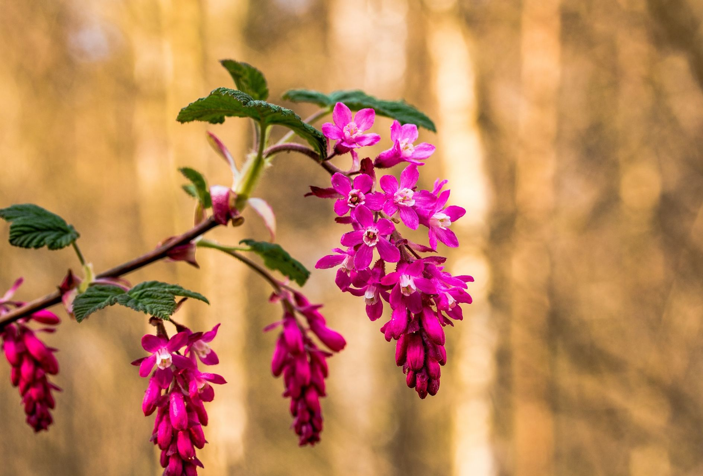
- Le rosier Tequila
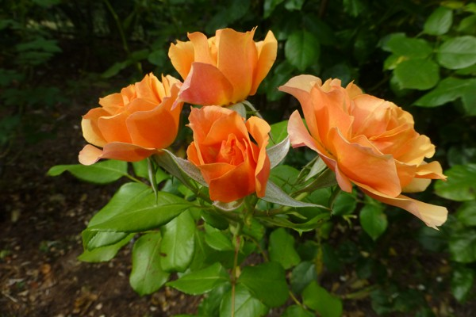
- L'abélia
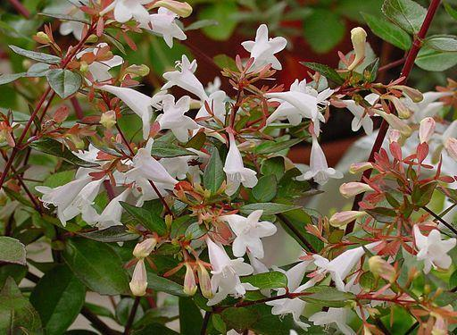
- La lavatière arbustive
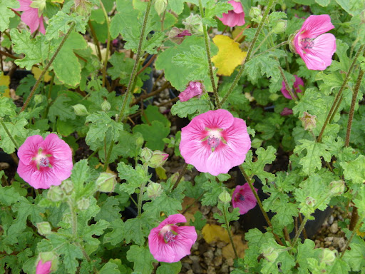
La haie taillée
La haie libre s'oppose à la haie taillée, formée par un alignement de végétaux que l'on taille de façon géométrique,
forme propice à l'utilisation d'un taille-haie ou d'une cisaille.
Le résultat est soigné, d'un certain intérêt visuel, ne prend pas de place mais demande un entretien très régulier
Quels arbustes choisir ?
- Ceanothus Burkwoodii
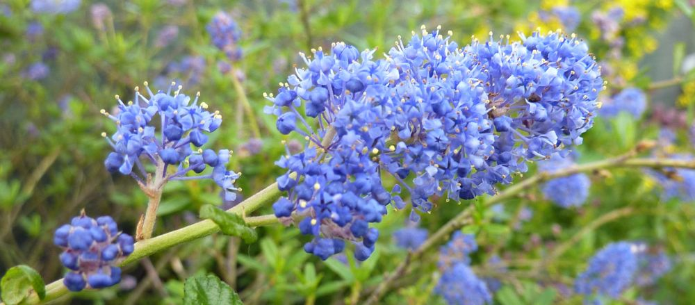
- Viburnus Tunus
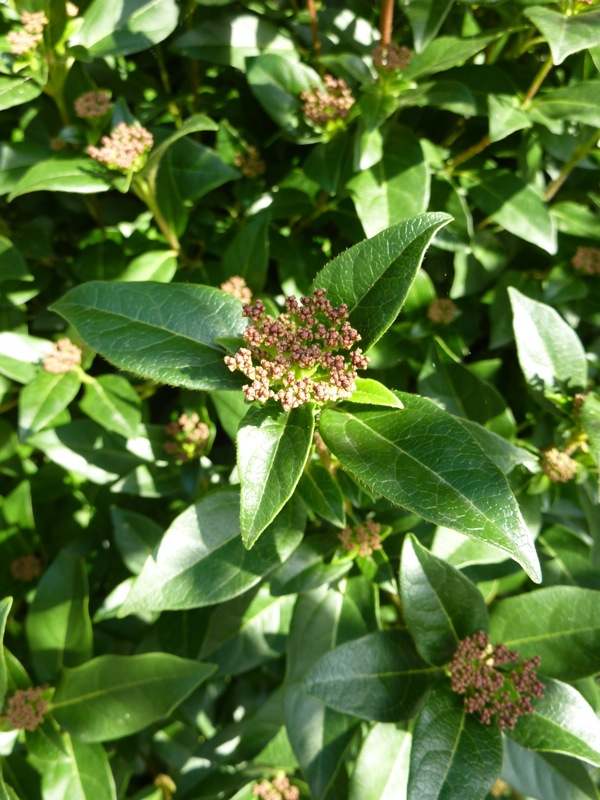
- Cotoneaster-lacteus
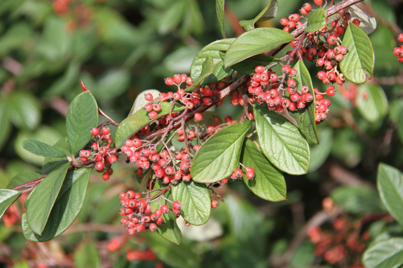
- Philadeus Coronarius
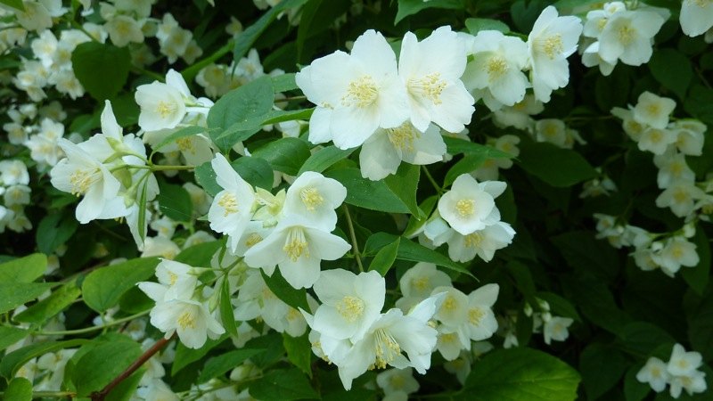
La haie fleurie
La haie fleurie est sans aucun doute celle qui vous donnera le plus de satisfaction au niveau esthétisme.
Avoir des fleurs tout au long de l’année présente également l’avantage d’attirer bon nombre d’oiseaux et
d’insectes qui participent à la protection de votre jardin contre les maladies.
Quels arbustes choisir ?
- Callistemon-laevis
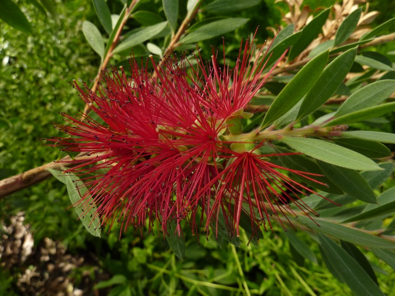
- Cornus-florida-rubra
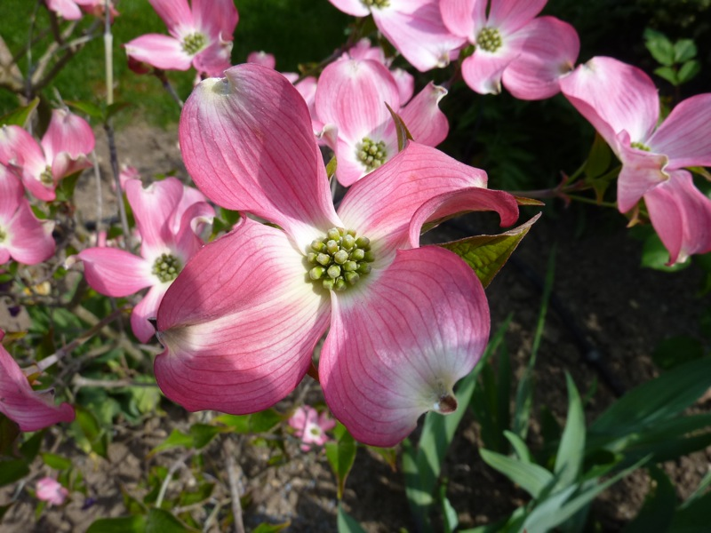
- Cotoneaster-lacteus
- Prunus Incisa Kojo No Mai
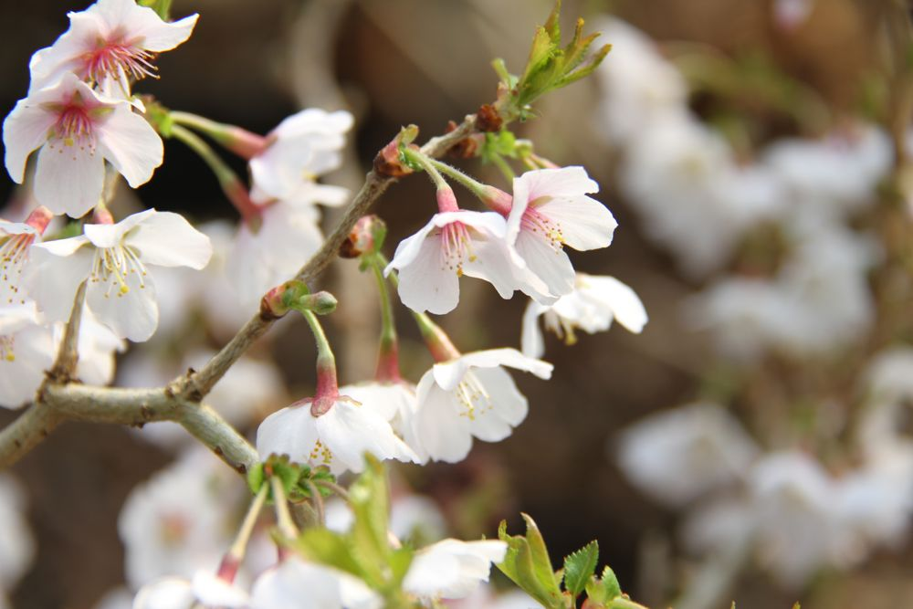